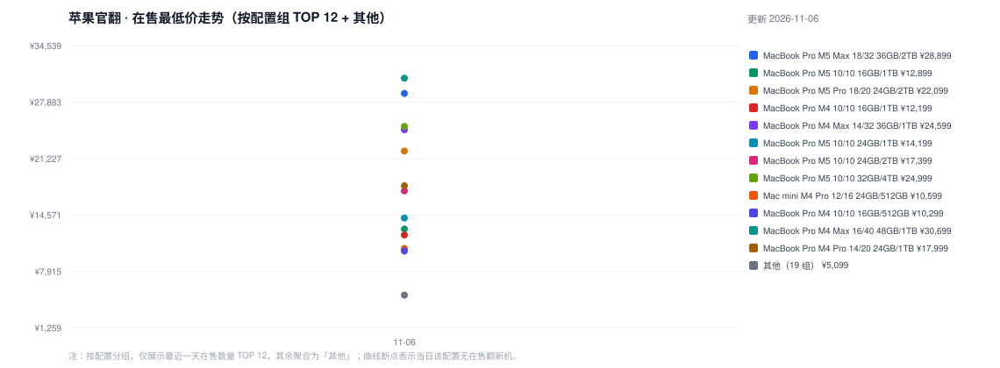
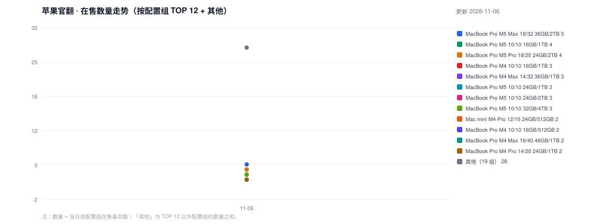

每日 19:00 自动抓取 Mac Studio / Mac mini / MacBook Pro 的苹果官方翻新在售机型与价格。数据见 history.csv 与 data/。


| 型号 | 芯片 | 配置 | 价格 | 链接 |
|---|---|---|---|---|
| Mac Studio | M3 Ultra | 32核CPU / 80核GPU / 256GB / 16TB | ¥119,899 | 商品 |
| Mac mini | M4 | 10核CPU / 10核GPU / 16GB / 256GB | ¥5,099 | 商品 |
| Mac mini | M4 | 10核CPU / 10核GPU / 16GB / 512GB | ¥6,399 | 商品 |
| Mac mini | M4 | 10核CPU / 10核GPU / 24GB / 512GB | ¥7,599 | 商品 |
| Mac mini | M4 Pro | 12核CPU / 16核GPU / 24GB / 512GB | ¥10,599 | 商品 |
| Mac mini | M4 Pro | 12核CPU / 16核GPU / 24GB / 512GB | ¥10,799 | 商品 |
| Mac mini | M4 Pro | 14核CPU / 20核GPU / 24GB / 2TB | ¥16,999 | 商品 |
| MacBook Pro | M4 | 10核CPU / 10核GPU / 16GB / 1TB / 14英寸 | ¥12,199 | 商品 |
| MacBook Pro | M4 | 10核CPU / 10核GPU / 16GB / 1TB / 14英寸 | ¥12,199 | 商品 |
| MacBook Pro | M4 | 10核CPU / 10核GPU / 16GB / 1TB / 14英寸 | ¥13,199 | 商品 |
| MacBook Pro | M4 | 10核CPU / 10核GPU / 16GB / 512GB / 14英寸 | ¥10,299 | 商品 |
| MacBook Pro | M4 | 10核CPU / 10核GPU / 16GB / 512GB / 14英寸 | ¥10,299 | 商品 |
| MacBook Pro | M4 Max | 14核CPU / 32核GPU / 36GB / 1TB / 14英寸 | ¥24,599 | 商品 |
| MacBook Pro | M4 Max | 14核CPU / 32核GPU / 36GB / 1TB / 14英寸 | ¥24,599 | 商品 |
| MacBook Pro | M4 Max | 14核CPU / 32核GPU / 36GB / 1TB / 16英寸 | ¥26,399 | 商品 |
| MacBook Pro | M4 Max | 16核CPU / 40核GPU / 48GB / 1TB / 16英寸 | ¥30,699 | 商品 |
| MacBook Pro | M4 Max | 16核CPU / 40核GPU / 48GB / 1TB / 16英寸 | ¥30,699 | 商品 |
| MacBook Pro | M4 Max | 16核CPU / 40核GPU / 48GB / 2TB / 16英寸 | ¥33,899 | 商品 |
| MacBook Pro | M4 Max | 16核CPU / 40核GPU / 128GB / 1TB / 16英寸 | ¥44,399 | 商品 |
| MacBook Pro | M4 Pro | 14核CPU / 20核GPU / 24GB / 1TB / 14英寸 | ¥17,999 | 商品 |
| MacBook Pro | M4 Pro | 14核CPU / 20核GPU / 24GB / 1TB / 14英寸 | ¥17,999 | 商品 |
| MacBook Pro | M4 Pro | 14核CPU / 20核GPU / 24GB / 512GB / 16英寸 | ¥18,399 | 商品 |
| MacBook Pro | M4 Pro | 14核CPU / 20核GPU / 24GB / 512GB / 16英寸 | ¥18,399 | 商品 |
| MacBook Pro | M4 Pro | 14核CPU / 20核GPU / 48GB / 512GB / 16英寸 | ¥22,299 | 商品 |
| MacBook Pro | M4 Pro | 14核CPU / 20核GPU / 48GB / 512GB / 16英寸 | ¥22,299 | 商品 |
| MacBook Pro | M5 | 10核CPU / 10核GPU / 16GB / 1TB / 14英寸 | ¥12,899 | 商品 |
| MacBook Pro | M5 | 10核CPU / 10核GPU / 16GB / 1TB / 14英寸 | ¥12,899 | 商品 |
| MacBook Pro | M5 | 10核CPU / 10核GPU / 16GB / 1TB / 14英寸 | ¥13,899 | 商品 |
| MacBook Pro | M5 | 10核CPU / 10核GPU / 16GB / 1TB / 14英寸 | ¥13,899 | 商品 |
| MacBook Pro | M5 | 10核CPU / 10核GPU / 16GB / 2TB / 14英寸 | ¥16,099 | 商品 |
| MacBook Pro | M5 | 10核CPU / 10核GPU / 16GB / 2TB / 14英寸 | ¥16,999 | 商品 |
| MacBook Pro | M5 | 10核CPU / 10核GPU / 16GB / 512GB / 14英寸 | ¥10,999 | 商品 |
| MacBook Pro | M5 | 10核CPU / 10核GPU / 16GB / 512GB / 14英寸 | ¥10,999 | 商品 |
| MacBook Pro | M5 | 10核CPU / 10核GPU / 24GB / 1TB / 14英寸 | ¥14,199 | 商品 |
| MacBook Pro | M5 | 10核CPU / 10核GPU / 24GB / 1TB / 14英寸 | ¥14,199 | 商品 |
| MacBook Pro | M5 | 10核CPU / 10核GPU / 24GB / 1TB / 14英寸 | ¥15,199 | 商品 |
| MacBook Pro | M5 | 10核CPU / 10核GPU / 24GB / 2TB / 14英寸 | ¥17,399 | 商品 |
| MacBook Pro | M5 | 10核CPU / 10核GPU / 24GB / 2TB / 14英寸 | ¥17,399 | 商品 |
| MacBook Pro | M5 | 10核CPU / 10核GPU / 24GB / 2TB / 14英寸 | ¥18,299 | 商品 |
| MacBook Pro | M5 | 10核CPU / 10核GPU / 32GB / 4TB / 14英寸 | ¥24,999 | 商品 |
| MacBook Pro | M5 | 10核CPU / 10核GPU / 32GB / 4TB / 14英寸 | ¥25,999 | 商品 |
| MacBook Pro | M5 | 10核CPU / 10核GPU / 32GB / 4TB / 14英寸 | ¥25,999 | 商品 |
| MacBook Pro | M5 Max | 18核CPU / 32核GPU / 36GB / 2TB / 14英寸 | ¥28,899 | 商品 |
| MacBook Pro | M5 Max | 18核CPU / 32核GPU / 36GB / 2TB / 14英寸 | ¥28,899 | 商品 |
| MacBook Pro | M5 Max | 18核CPU / 32核GPU / 36GB / 2TB / 16英寸 | ¥30,599 | 商品 |
| MacBook Pro | M5 Max | 18核CPU / 32核GPU / 36GB / 2TB / 16英寸 | ¥30,599 | 商品 |
| MacBook Pro | M5 Max | 18核CPU / 32核GPU / 36GB / 2TB / 16英寸 | ¥31,599 | 商品 |
| MacBook Pro | M5 Max | 18核CPU / 40核GPU / 48GB / 2TB / 16英寸 | ¥34,799 | 商品 |
| MacBook Pro | M5 Max | 18核CPU / 40核GPU / 48GB / 2TB / 16英寸 | ¥34,799 | 商品 |
| MacBook Pro | M5 Pro | 15核CPU / 16核GPU / 24GB / 1TB / 14英寸 | ¥16,999 | 商品 |
| MacBook Pro | M5 Pro | 15核CPU / 16核GPU / 24GB / 1TB / 14英寸 | ¥16,999 | 商品 |
| MacBook Pro | M5 Pro | 15核CPU / 16核GPU / 24GB / 2TB / 14英寸 | ¥20,199 | 商品 |
| MacBook Pro | M5 Pro | 15核CPU / 16核GPU / 24GB / 2TB / 14英寸 | ¥20,199 | 商品 |
| MacBook Pro | M5 Pro | 18核CPU / 20核GPU / 24GB / 1TB / 16英寸 | ¥21,199 | 商品 |
| MacBook Pro | M5 Pro | 18核CPU / 20核GPU / 24GB / 1TB / 16英寸 | ¥21,199 | 商品 |
| MacBook Pro | M5 Pro | 18核CPU / 20核GPU / 24GB / 2TB / 14英寸 | ¥22,099 | 商品 |
| MacBook Pro | M5 Pro | 18核CPU / 20核GPU / 24GB / 2TB / 14英寸 | ¥22,099 | 商品 |
| MacBook Pro | M5 Pro | 18核CPU / 20核GPU / 24GB / 2TB / 16英寸 | ¥24,399 | 商品 |
| MacBook Pro | M5 Pro | 18核CPU / 20核GPU / 24GB / 2TB / 16英寸 | ¥24,399 | 商品 |
| MacBook Pro | M5 Pro | 18核CPU / 20核GPU / 24GB / 4TB / 14英寸 | ¥29,399 | 商品 |